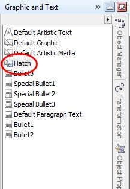
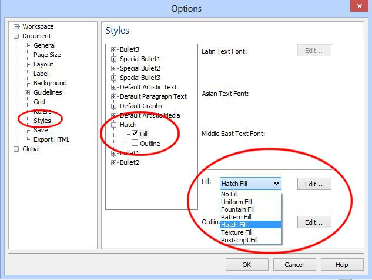
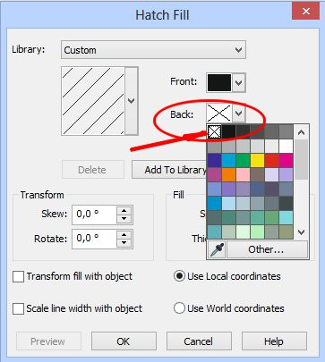
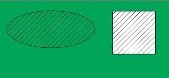

ВОПРОС / ОТВЕТ ДЛЯ НАЧИНАЮЩИХ
polzovatel-902 / 13.07.2010, 09:21/00:41
Форум:
Объясню на примере, чтоб было понятней... Открываю в кореле картинку (футболку с надписью) в формате JPG, мне нужно вытянуть из футболки надпись, т.е разъеденить файл... Говорят нужно формат изменить, еще что-то... Объясните, пожалуйста, что нужно сделать для этого...? Заранее спасибо.
Salas, принимайте файл в версии 14
Название: ЛИСТОВКА (2).cdr версия Х4
Размер: 1.61 Мб
Доступен до: 2013-03-01 11:04:22
Ссылка для скачивания файла: Внешняя ссылка
Dastin , ОГРОМНОЕ человеческое Спаcибо!!
Доброго дня, коллеги!
Возможно. в этой теме был ответ - я не нашел, так что спрошу.
Не могу разобраться, как сделать заливку "штриховка", у которой линии заданного цвета, а фон (пространство между линиями) прозрачный? В заливке Pattern fill->Two-color bitmap pattern fill цвет линий менять можно, но цвет фона прозрачным нельзя выбрать. Заливка Postscripts->Hatching по-умолчанию с прозрачным фоном, но цвет не могу понять как менять. При этом существует вариант ColorHatching, но там, увы, самому задавать цвет нельзя, просто он изменяется от линии к линии... Не покидает ощущение, что чего-то очень простого не понимаю - ну как так, Postscript заливка цвет, отличный от черного и белого (судя по ColorHatching), иметь может, но задавать этот цвет нельзя. быть того не может :) Если дело в версии (я использую "старичков" v12 и x3), то подскажите, в какой версии такие возможности есть.
pasha1976, в Corel X5 есть такая возможность. А эта тема (штриховки) обсуждалась ЗДЕСЬ
Выходил на эту тему и раньше (яндексом)... Увы, там в основном про Pattern fill, т.е. с непрозрачным фоном. Отчасти проблему можно решить обсуждающимся там же поверклипом, но уж неудобно как-то. Меж тем постскрипт всем хорош кроме цвета, именно его удобней всего было использовать для создания простых штриховок. И вот нашел, как менять цвет - правкой файла userproc.ps. теперь создам много разноцветных штриховок и буду пользоваться...
Кстати, при экспорте в EPS все postscript-заливки конвертируются в набор обычных линий и контуров, которые можно свободно раскрашивать в любой цвет. При случае можно воспользоваться и таким способом.
А что такое EPS?
И, кстати, об экспорте :) - до сих пор я выходил из положения совсем уж кондово, после того, как область штриховки уже была окончательно выполнена и редактированию (по контуру, толщине и направлению линий) не подлежала, так просто конвертировал ее в растр (с прозрачным фоном) и после перекрашивал как надо...
Enhanced PostScript. Это такой универсальный векторный формат. Понимается множеством программ. Corel DRAW в том числе.
pasha1976! Хотя я не сразу обратил внимание, что фон у штриховки должен быть прозрачным, но суть решения вопроса не поменялась. Если бы Вы внимательно почитали обсуждавшуюся тему, на которую я дал ссылку, то заметили бы, что штриховку можно сделать прозрачной.
Вот краткий алгоритм моих действий, которые я сделал.
1. В документе, где надо создать прозрачную штриховку, я создал обычный прямоугольник и залил его штриховкой. Объект остался выделен, но возможно это и не обязательно.
2. Вызвал докер Graphic and Text Styles (Ctrl + F5). Создал новый стиль. Переименовал его в Hatch для большей осмысленности (рис. 1).

3. Затем выполняем команду Tools > Options и в окне Options находим раздел Styles. На странице Styles, в списке стилей находим наш созданный стиль Hatch и щелкаем на плюсик возле него. Снимаем галку Outline, а в списке Fill (в правой части окна), выбираем Hatch Fill и нажимаем кнопку Edit (рис. 2).

4. В диалоговом окне Hatch Fill, в списке Back (Фон) убираем цвет (рис. 3).

И будет Вам счастье. Теперь штриховка будет прозрачной. Вот вам ниже скриншот, когда поверх зеленого прямоугольника наложен овал с прозрачной штриховкой и квадрат с такой же штриховкой, но без прозрачности.

Но, как я уже говорил, это можно сделать в Corel X5.
Страницы